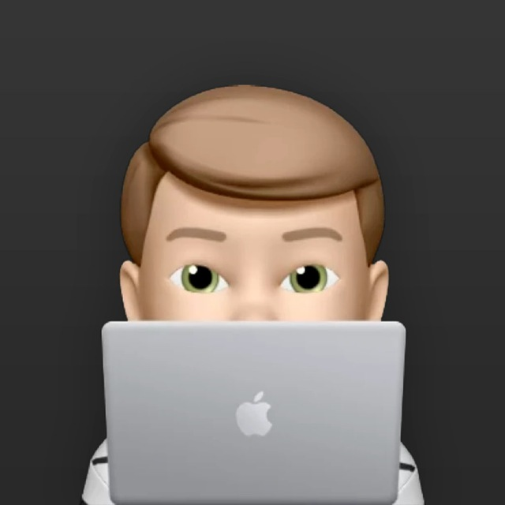

Vasily Abrosimov
Indie Game Developer
Projects

My Talking Floppa
My Talking Floppa is a fun virtual pet game where you take care of a charismatic and meme-inspired cat.
Feed him, play mini-games, customize his look, and enjoy humorous interactions in a light-hearted experience.